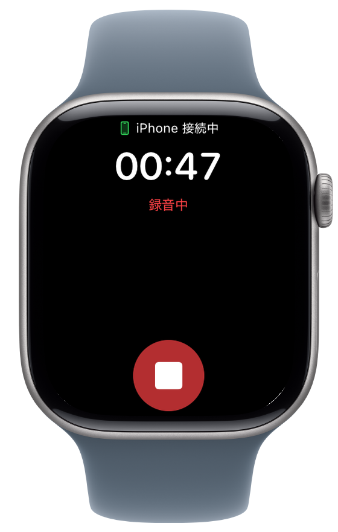

01
会議のあと、録音を聞き直して議事録を書いている
02
誰が何をいつまでにやるか、会議の後で確かめ直す
03
先月の会議で決まったことを、録音から探し出せない
Texter 法人向け資料
社内で使えるかを判断する担当者の方へ
会議・取材・講義の録音を、
文字と要約とやることに変えるアプリ
（iPhone・iPad・Mac・Apple Watch・Android）

公開日は11月14日。
メールマガジンは同日午前10時に、
約8,500人へ配信する
納品された写真3点を確認する
11月12日まで
メールの原稿を作る
11月7日まで
山田さんに納期の確認メールを送る
今日中に
「コピー用紙の発注数と、
クーポンの期限を教えて」
クーポンの期限は11月30日まで（根拠つき）

2026年11月 Somewhere LLC texter.work
1回の打ち合わせの例
Texter
台本で作った新商品の打ち合わせ（架空）の録音を取り込んだときの、アプリの出力

要約
アプリが作った要約から抜粋
公開日は11月14日、メールマガジンは同日午前10時に約8,500人へ配信する
クーポンは15%オフで、期限は11月30日まで
やること
担当と期限は、人が確かめてから使う
納品された写真3点を確認する
11月12日まで
佐藤さんと一緒に写真を確認する
担当：私
メールの原稿を作る
11月7日まで
山田さんに納期の確認メールを送る
今日中に
04 / 17
文字起こしと話者識別
Texter
発言を話者ごとに分け、句読点を付けた読める文にする
話者の名前は、
あとから直せる。
句読点も自動で付く
無料でも、録音ファイルなら音声60分まで
Premiumは録音しながらでも分けられる（ベータ）
06 / 17